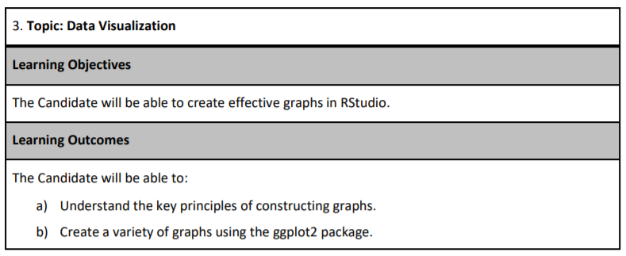
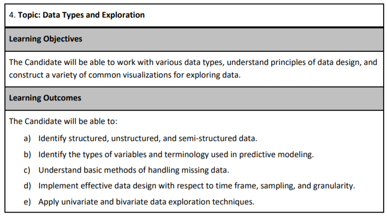
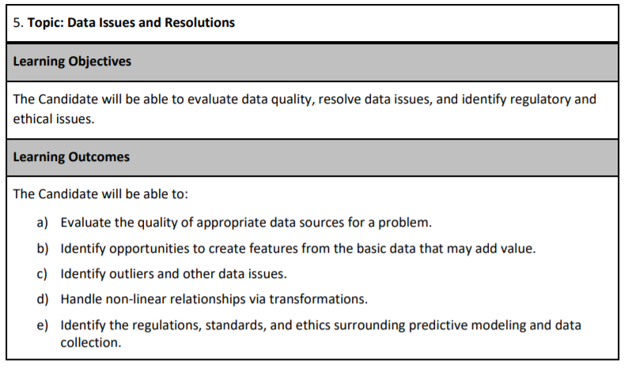
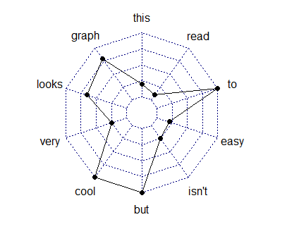

7 Data exploration
## python: C:/Users/casti/AppData/Local/Programs/Python/Python313/python.exe
## libpython: C:/Users/casti/AppData/Local/Programs/Python/Python313/python313.dll
## pythonhome: C:/Users/casti/AppData/Local/Programs/Python/Python313
## version: 3.13.2 (tags/v3.13.2:4f8bb39, Feb 4 2025, 15:23:48) [MSC v.1942 64 bit (AMD64)]
## Architecture: 64bit
## numpy: C:/Users/casti/AppData/Local/Programs/Python/Python313/Lib/site-packages/numpy
## numpy_version: 2.2.3
##
## NOTE: Python version was forced by use_python() functionExploration is about making discoveries and you should have a curious mind and strong technical skills to make sense of the data. This chapter will give you the tools to take dirty, unprocessed data, clean it up, discover interesting trends using graphs and summary statistics, and communicate your results to a business audience.
About 10 - 15% of your grade will be based on data exploration. Recent Exam PA administrations have included questions about data exploration. Putting in extra practice in this area is guaranteed to give you a better score because it will free up time that you can use elsewhere. For curated practice sets, visit PredictiveInsightsAI.com.
The syllabus divides this into three learning objectives, which can make the topic intimidating. Data Visualization, Data Types and Exploration, and Data Issues and Resolutions, but you will always be doing these things together, and so this chapter will cover all three at once.



Exploratory Data Analysis (EDA) is usually the first phase of an analytics project. This is as much of an art as it is a science because everyone has their style. If you ask two actuaries to perform EDA on the same data set, they will likely use different methods. These can be broken down into phases.

Figure 7.1: Data Exploration Phases - From R for Data Science
From the current syllabus language, these are
Import:
- Evaluate the quality of appropriate data sources for a problem.
- Identify the regulations, standards, and ethics surrounding predictive modeling and data
Tidy:
- Identify structured, unstructured, and semi-structured data.
- Identify the types of variables and terminology used in predictive modeling.
- Understand basic methods of handling missing data.
- Implement effective data design with respect to time frame, sampling, and granularity.
Transform:
- Identify opportunities to create features from the primary data that may add value.
- Identify outliers and other data issues.
- Handle non-linear relationships via transformations.
Visualize:
- Apply univariate and bivariate data exploration techniques.
- Understand the fundamental principles of constructing graphs.
- Create a variety of graphs using the ggplot2 package.
Model:
- Fit and interpret models
Communicate:
- Write the report
7.1 How to make graphs in R?
Let us create a histogram of the claims. The first step is to create a blank canvas that holds the columns that are needed. The library to make this is called ggplot2.
The aesthetic argument, aes, means that the variable shown will the the claims.
The sample_frac means that only 20% of the data is used. This makes the visuzlization less cluttered.
reticulate::use_python("C:/Users/casti/AppData/Local/Programs/Python/Python313/python.exe", required = TRUE)
library(reticulate)
Sys.setenv(RETICULATE_UV_ENABLED = "0")
py_config()## python: C:/Users/casti/AppData/Local/Programs/Python/Python313/python.exe
## libpython: C:/Users/casti/AppData/Local/Programs/Python/Python313/python313.dll
## pythonhome: C:/Users/casti/AppData/Local/Programs/Python/Python313
## version: 3.13.2 (tags/v3.13.2:4f8bb39, Feb 4 2025, 15:23:48) [MSC v.1942 64 bit (AMD64)]
## Architecture: 64bit
## numpy: C:/Users/casti/AppData/Local/Programs/Python/Python313/Lib/site-packages/numpy
## numpy_version: 2.2.3
##
## NOTE: Python version was forced by use_python() functiondatasets <- import("datasets")
ds <- datasets$load_dataset("supersam7/readmission")
# Fix: convert the Arrow table / Dataset to pandas DataFrame first
df_pd <- ds["train"]$to_pandas() # or ds$train$to_pandas()
# Then sample in R with dplyr (now it's a real data.frame / tibble)
df <- df_pd %>% sample_frac(0.05)
p <- df %>%
ggplot(aes(HCC.Riskscore))If we look at p, we see that it is nothing but white space with axis for count and income.

7.1.1 Add a plot
We add a histogram

Different plots are called “geoms” for “geometric objects.” Geometry = Geo (space) + meter (measure), and graphs measure data. For instance, instead of creating a histogram, we can draw a gamma distribution with stat_density.

Create an xy plot by adding and x and a y argument to aesthetic.

7.2 The different graph types
Only four types of graphs are used for data exploration. You will only need to understand how to interpret them. The SOA will provide you with the code needed to create them. There will not be enough time for you to make your graphs.
7.2.1 Histogram
The histogram is used when you want to look at the probability distribution of a continuous variable.
The template code in your .Rmd file will look like this. Just change “variable” to the name without quotes of the variable and then copy and paste.
7.2.2 Box plot
The boxplot compactly displays the distribution of a continuous variable. It visualizes five summary statistics (the median, two hinges, and two whiskers) and all “outlying” observations individually.
7.2.3 Scatterplot
The point geom is used to create scatterplots. The scatterplot is most useful for displaying the relationship between two continuous variables. It can be used to compare one continuous and one categorical variable or two categorical variables.
7.2.4 Bar charts
There are two types of bar charts: geom_bar() (Univariate) and geom_col() (Bivatiate). geom_bar() makes the height of the bar proportional to the number of cases in each group (or if the weight aesthetic is supplied, the sum of the weights). If you want the heights of the bars to represent values in the data, use geom_col() instead. geom_bar() uses stat_count() by default: it counts the number of cases at each x position.
7.3 How to save time with dplyr?
You may have noticed that writing code for data manipulation can be slow. Fortunately, there is a faster, 100%-legal way of doing data manipulation that has worked for hundreds of exam candidates (the author included) who have taken Exam PA.
Up to this point, we have been using old R libraries. By making use of newer R libraries, we can save ourselves time. These will all be provided for you at the exam center within the tidyverse library.
7.3.1 Data manipulation chaining
Pipes allow for data manipulations to be chained with visualizations. The possibilities are nearly limitless.
library(tidyverse)
iris %>%
select(where(is.numeric)) %>%
pivot_longer(cols = everything(), names_to = "feature", values_to = "value") %>%
ggplot(aes(value)) +
geom_histogram() +
facet_wrap(vars(feature))
Suggested reading of R for Data Science (https://r4ds.had.co.nz/index.html):
| Chapter | Topic |
|---|---|
| 9 | Introduction |
| 10 | Tibbles |
| 12 | Tidy data |
| 15 | Factors |
| 17 | Introduction |
| 18 | Pipes |
| 19 | Functions |
| 20 | Vectors |
7.3.2 Types of Missing Values
Read the Data Dictionary from the Project Statement and check for these three types of missingness.
- Missing at random (MAR): There is no pattern between the missingness and the value of missing variable.
- Missing not at random (MNAR): The value of the missing variable is related to the reason it is missing. Example: A survey concerning illegal drug use where respondents are reluctant to admit that they have broken the law.
- Hidden missingness: When a value is coded incorrectly, such as when a numeric variable with “999” or “0” or a factor does not match the Data Dictionary.
7.3.3 Missing Value Resolutions:
You can use any of these methods but make sure that you describe your reasoning in the report.
- Remove observations: Use when there are only a few missing values or when they are MAR.
- Create new level “missing:” Use when there are more values or when they are MNAR.
- Impute with the mean: Use when there are numeric values MAR.
- Remove variable altogether: Use when most observations are missing (≥ 50% of observations), and there is no way to repair the data.
While you are reviewing the data for missingness, you may also decide to remove some variables altogether. This could be because of racial or ethical concerns, limitations of future availability, instability of the data over time, or inexplicability.
TASK 1 (12 points)
Examine each variable and make appropriate adjustments.
Examine each predictor variable other than cap_gain both on its own and for value_flag. Make appropriate adjustments. Do not make any adjustments to the cap_gain variable at this time.
There should be no further variable adjustments unless specifically requested.
Because the data is already loaded, use the below code to access the data.
To save keystrokes, give the data a short name such as df for “data frame”.
# Convert character columns to factors
df <- df %>% mutate(across(where(is.character), as.factor))
glimpse(df) # verify it worked## Rows: 48,842
## Columns: 8
## $ age <dbl> 39, 50, 38, 53, 28, 37, 49, 52, 31, 42, 37, 30, 23, 32,…
## $ education_num <dbl> 13, 13, 9, 7, 13, 14, 5, 9, 14, 13, 10, 13, 13, 12, 11,…
## $ marital_status <fct> Never-married, Married-civ-spouse, Divorced, Married-ci…
## $ occupation <fct> Group 2, Group 5, Group 1, Group 1, Group 5, Group 5, G…
## $ cap_gain <dbl> 2174, 0, 0, 0, 0, 0, 0, 0, 14084, 5178, 0, 0, 0, 0, 0, …
## $ hours_per_week <dbl> 40, 13, 40, 40, 40, 40, 16, 45, 50, 40, 80, 40, 30, 50,…
## $ score <dbl> 58.99, 55.78, 62.75, 60.10, 53.31, 54.07, 61.72, 61.41,…
## $ value_flag <fct> Low, Low, Low, Low, Low, Low, Low, High, High, High, Hi…## age education_num marital_status occupation
## Min. :17.00 Min. : 1.00 Divorced : 6633 Group 1 : 7237
## 1st Qu.:28.00 1st Qu.: 9.00 Married-AF-spouse : 37 Group 2 :10123
## Median :37.00 Median :10.00 Married-civ-spouse :22379 Group 3 :13971
## Mean :38.64 Mean :10.08 Married-spouse-absent: 628 Group 4 : 2444
## 3rd Qu.:48.00 3rd Qu.:12.00 Never-married :16117 Group 5 :12258
## Max. :90.00 Max. :16.00 Separated : 1530 Group NA: 2809
## Widowed : 1518
## cap_gain hours_per_week score value_flag
## Min. : 0 Min. : 1.00 Min. :43.94 High:11687
## 1st Qu.: 0 1st Qu.:40.00 1st Qu.:57.50 Low :37155
## Median : 0 Median :40.00 Median :60.24
## Mean : 1079 Mean :40.42 Mean :60.23
## 3rd Qu.: 0 3rd Qu.:45.00 3rd Qu.:62.95
## Max. :99999 Max. :99.00 Max. :76.53
## 7.3.4 Garbage in; garbage out 🗑
This is a common saying when working with predictive models. No matter how complex the model, the actual result will be wrong if the data is terrible. For this exam, master the art of data manipulation, and everything becomes easier!
Begin by looking at a summary.
## age education_num marital_status occupation
## Min. :17.00 Min. : 1.00 Divorced : 6633 Group 1 : 7237
## 1st Qu.:28.00 1st Qu.: 9.00 Married-AF-spouse : 37 Group 2 :10123
## Median :37.00 Median :10.00 Married-civ-spouse :22379 Group 3 :13971
## Mean :38.64 Mean :10.08 Married-spouse-absent: 628 Group 4 : 2444
## 3rd Qu.:48.00 3rd Qu.:12.00 Never-married :16117 Group 5 :12258
## Max. :90.00 Max. :16.00 Separated : 1530 Group NA: 2809
## Widowed : 1518
## cap_gain hours_per_week score value_flag
## Min. : 0 Min. : 1.00 Min. :43.94 High:11687
## 1st Qu.: 0 1st Qu.:40.00 1st Qu.:57.50 Low :37155
## Median : 0 Median :40.00 Median :60.24
## Mean : 1079 Mean :40.42 Mean :60.23
## 3rd Qu.: 0 3rd Qu.:45.00 3rd Qu.:62.95
## Max. :99999 Max. :99.00 Max. :76.53
## ## tibble [48,842 × 8] (S3: tbl_df/tbl/data.frame)
## $ age : num [1:48842] 39 50 38 53 28 37 49 52 31 42 ...
## $ education_num : num [1:48842] 13 13 9 7 13 14 5 9 14 13 ...
## $ marital_status: Factor w/ 7 levels "Divorced","Married-AF-spouse",..: 5 3 1 3 3 3 4 3 5 3 ...
## $ occupation : Factor w/ 6 levels "Group 1","Group 2",..: 2 5 1 1 5 5 1 5 5 5 ...
## $ cap_gain : num [1:48842] 2174 0 0 0 0 ...
## $ hours_per_week: num [1:48842] 40 13 40 40 40 40 16 45 50 40 ...
## $ score : num [1:48842] 59 55.8 62.8 60.1 53.3 ...
## $ value_flag : Factor w/ 2 levels "High","Low": 2 2 2 2 2 2 2 1 1 1 ...
## - attr(*, "pandas.index")=RangeIndex(start=0, stop=48842, step=1)7.3.5 Be a detective 🔍
Sherlock Holmes is famous for saying, “You see, Watson, but you do not observe!”
Just like detectives, actuaries need to collect data and make observations. Each exam has a few “anomalies” in the data, which they expect candidates to mention. These could be
- Any value that does not match the Data Dictionary in the Project Statement
- Variables that have
NAvalues - Variables that have many factor levels
- Incorrect data types
- Factors that are read as characters or vice versa
- Numeric variables that are factor/character
- Extreme values (Numeric values are too high or low)
You will get very good at spotting these with practice. Just from looking at the above summary, we can observe the following:
Observations
- The data consists of 48,842 obs. of 8 variables.
- The lowest
ageis 17 but the Project Statement says to only include observations withage>= 25. - The
cap_gaindistribution is right-skewed because the median (0) is less than the mean (1079), but the Project Statement said not to transform this. Otherwise, I would apply a log transform. education_numtakes integer values between 1 and 16. There are many values that are low.- There are missing values when
occupationisgroup NA, which means that the occupation of the person is unknown. - The amount that people work per work,
hours_per_week, varies by a lot. The lowest is 1 hour, and the highest is 99. Most people work 40 hours per week.
Study Tip: Never apply a log transform to the target variable. Only the predictor variables get logs taken. At this stage, we note if it is right-skewed or not.
The solution of SOA recommends leaving comments in your .Rmd file. This helps to give you partial credit on questions that you may answer incorrectly.
Good comments
#I observe that there are no missing values other than those indicated by Group NA for occupation.
#I removed the code provided by my assistant. It is embedded in later chunks as needed.
#I excluded people under the age of 25
df <- df[df$age >= 25,]
#I convert the target to 0-1.
df$value_flag <- ifelse(df$value_flag == "High",1,0)Useless comments
7.3.6 A picture is worth a thousand words 📷
What is your favorite type of graph? Mine is a radar chart. This is a graphical method of displaying multivariate data in the form of a two-dimensional chart of three or more quantitative variables represented on axes starting from the same point.
That is pretty, right?

Do not waste time trying to make the graphs perfect!
Only change code that you need to change. If you need assistance to do it faster then SOA can help you save time by giving you templates.
This is the code template that they give you. You only need to change the “variable” names.
# This code makes a histogram for a continuous variable.
ggplot(df, aes(x = variable)) +
geom_histogram(bins = 30) +
labs(x = "variable") +
theme(axis.text.x = element_text(angle = 90, hjust = 1))
# This code makes a bar chart for a factor variable.
ggplot(df, aes(x = variable)) +
geom_bar() +
labs(x = "variable") +
theme(axis.text.x = element_text(angle = 90, hjust = 1))Okay, that was not 100% true. It is common for the code to require small changes. changes. For instance, the histogram that they give you has bins that are too narrow for age, which causes these spikes to show up in the graph.
The best candidates altered the code to create more appropriate plots and summary tables.
# This code makes a histogram for a continuous variable.
ggplot(df, aes(x = age)) +
geom_histogram(bins = 30) + #not the right number of bins
labs(x = "age") +
theme(axis.text.x = element_text(angle = 90, hjust = 1)) +
ggtitle("Bad: Default histogram with spikes")
#Histograms of continuous variables
ggplot(df, aes(x = age)) +
geom_histogram(breaks = seq(24.5,99.5, by = 5)) + #make bins wider and set range
labs(x = "Age") +
theme(axis.text.x = element_text(angle = 90, hjust = 1)) +
ggtitle("Good: After adjusting the breaks")
How do you know when a variable should a factor and when it should be numeric?
7.3.7 Factor or numeric ❓
Which variables should be converted to factors and which should be numeric?
Questions of this sort have come up twice. On Hospital Readmissions, a Length of Stay variable was numeric but had only a few values, so some candidates treated it as a factor. The education_num variable here is also numeric but only has 16 unique values. So should this be a numeric or a factor?
##
## 1 2 3 4 5 6 7 8 9 10 11 12 13
## 68 231 446 877 618 995 1042 382 13320 7812 1862 1411 7298
## 14 15 16
## 2621 834 593Ask yourself this question: is there a way of comparing two values of the variable together?
- If yes, then use numeric
- If no, then use a factor
For exmaple, we can say that education_num = 2 is less than education_num = 4, which means there is a natural order. This is also known as an ordinal.
If the factor is say, color, which can be red, blue, or green, then there is no way of comparing values together. Is red greater than blue? This question has no meaning.
ggplot(df, aes(x = education_num)) +
geom_histogram(bins = 30) +
labs(x = "Education") +
theme(axis.text.x = element_text(angle = 90, hjust = 1)) +
ggtitle("Default number of bins (30)")
ggplot(df, aes(x = education_num)) +
geom_histogram(bins = 16) +
labs(x = "Education") +
theme(axis.text.x = element_text(angle = 90, hjust = 1)) +
ggtitle("Set number of bins to number of factor levels (16) ")
We could also use a bar plot.

Lastly, read the Project Statement carefully and only do what it tells you to do.
Candidates were not required to make a plot for cap_gain. This solution has the plot made here rather than in Task 6.
7.3.8 73.6% of statistics are false 😨
Really? No, but statistics can help you see patterns that data visualization by itself can miss. Along with the ggplot codes, there will be code to look at summary statistics. Here is a refresher on what these statistics mean (no pun intended).
- Mean: The average. This gets skewed by outliers easily. If the mean is greater than the median, then the distribution is right-skewed.
- Median: The “middle” value. This is an average that reduces the impact of outliers.
- Variance: The amount by which each observation differs from the mean.
- Standard Deviation: The square root of the variance.
- n(): The number of observations. Always take note of groups that do not have many observations.
# This code provides, for each level of a factor variable, the number for which value_flag is zero, the number for which it is one, the total number of observations, and the proportion of ones.
# Note that the variable name should not be enclosed in quotation marks.
df %>%
group_by(variable) %>%
dplyr::summarise(
zeros = sum(value_flag == 0),
ones = sum(value_flag == 1),
n = n(),
proportion = mean(value_flag)
)Factors levels should be simplified. If a group has only a few observations, then there will be problems with the model. In our data, take a look at the marital_status column. Do you observe anything unusual?
##
## Divorced Married-AF-spouse Married-civ-spouse
## 6498 31 21661
## Married-spouse-absent Never-married Separated
## 573 8697 1438
## Widowed
## 1512Only 31 observations have Married-AF-spouse. This is because the sample size n = 31 is too small. In modeling jargon, this is “statistical insignificant” and will cause the p-value on marital_status to be large. You can fix this in a few different ways
- Delete these observations (Not recommended)
- Group these observations together with
Married-spouse(Simplest method)
Let us use the second method.
First, look at the levels of the factor variable.
## [1] "Divorced" "Married-AF-spouse" "Married-civ-spouse"
## [4] "Married-spouse-absent" "Never-married" "Separated"
## [7] "Widowed"Now look at the profitability across marital status. For Married-AF-spouse and Married-civ-spouse the proportion of high profit customers is high, but for Married-spouse-absent it is low. Even though these are all “married”, it would be a bad idea to combine them because the profitability is so different.
#Proportion of ones by category of factor variable
df %>%
group_by(marital_status) %>%
dplyr::summarise(
zeros = sum(value_flag == 0),
ones = sum(value_flag == 1),
n = n(),
proportion = mean(value_flag)
)## # A tibble: 7 × 5
## marital_status zeros ones n proportion
## <fct> <int> <int> <int> <dbl>
## 1 Divorced 5829 669 6498 0.103
## 2 Married-AF-spouse 19 12 31 0.387
## 3 Married-civ-spouse 11727 9934 21661 0.459
## 4 Married-spouse-absent 515 58 573 0.101
## 5 Never-married 8000 697 8697 0.0801
## 6 Separated 1342 96 1438 0.0668
## 7 Widowed 1384 128 1512 0.0847Then create a vector that has the simpler levels that you want. The order needs to be the same.
simple_levels <- c("Divorced", "Married-spouse", "Married-spouse", "Married-spuouse-absent", "Neber-married", "Separated", "Widowed")The function mapvalues takes in three arguments. You can read about this by typing ?mapvalues into the console.
x : the factor or vector to modify
from : a vector of the items to replace
to : a vector of replacement values
Then map the old values to the simpler values.
#Combine the two marital status levels
var.levels <- levels(df$marital_status)
df$marital_status <- mapvalues(x = df$marital_status,
from = var.levels,
to = simple_levels) Now, when you look at the marital_status levels, you will see the simpler levels.
## [1] "Divorced" "Married-spouse" "Married-spuouse-absent"
## [4] "Neber-married" "Separated" "Widowed"You can also check that the number of observations is what you expect.
##
## Divorced Married-spouse Married-spuouse-absent
## 6498 21692 573
## Neber-married Separated Widowed
## 8697 1438 1512